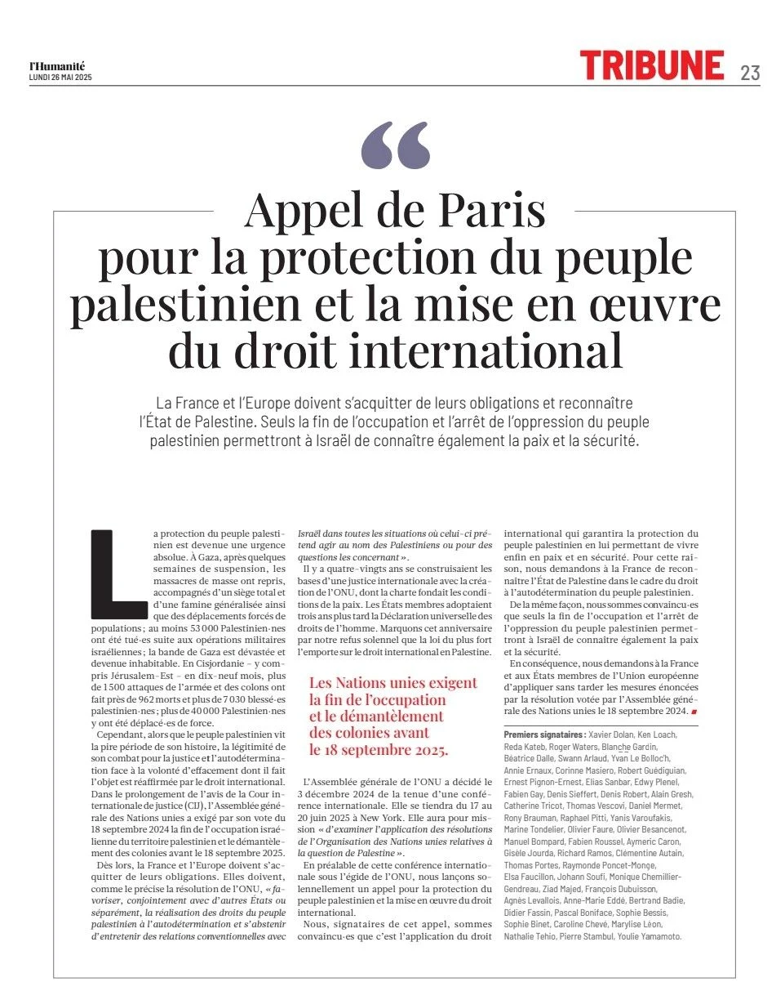

Tribune relayée
Reconnaître l’État de Palestine. L’Appel de Paris
Date indiquée par Facebook · 26 mai 2025
Repères éditoriaux
Nous avons relayé l’Appel de Paris pour la protection du peuple palestinien et la mise en œuvre du droit international. Le texte original est reproduit dans le visuel joint.
Texte conservé avec la publication
Reconnaissance de l'État de Palestine

Sources
Archive rouge · export Facebook · AR-0002-FB-01112
À lire aussi · Ofer Cassif. Un entretien relayé après la procédure à la Knesset · Le lien d’origine